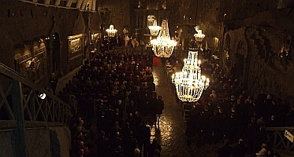
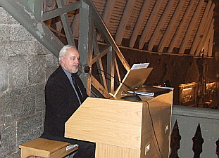
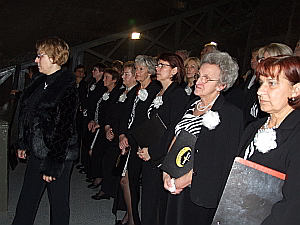

A tymczasem w Cameracie...
.
2011-12-05

Obchody Święta Górników rozpoczynają się w Wieliczce uroczystą mszą w kaplicy św. Kingi.
Koncertu Cameraty wysłuchali górnicy oraz zaproszeni goście.
Tegoroczne nabożeństwo było wyjątkowe. Metropolita krakowski kardynał Stanisław Dziwisz, który przewodniczył liturgii, przekazał w darze górnikom wielickim relikwie bł. Jana Pawła II.
Camerata miała zaszczyt uczestniczyć w tym wydarzeniu poprzez zapewnienie oprawy muzycznej mszy oraz dając krótki koncert przed samym obrzędem (zaśpiewaliśmy Mszę św. Cecylii (A. Cherion), Signore delle cime, Psalm XCVII, Pan jest mocą, a następnie Hymn Górniczy i Pozdrowienie Górnicze).


Camerata gotowa do koncertu.
Większość utworów śpiewaliśmy przy akompaniamencie Zenona Kulika.
Większość utworów śpiewaliśmy przy akompaniamencie Zenona Kulika.
Po zakończeniu tej części obchodów Barbórki, na pożegnanie, ponownie wykonany został Hymn Górniczy oraz Modlitwa w kościołku z „Halki”.

© Stowarzyszenie Muzyczne Chór Camerata Wieliczka